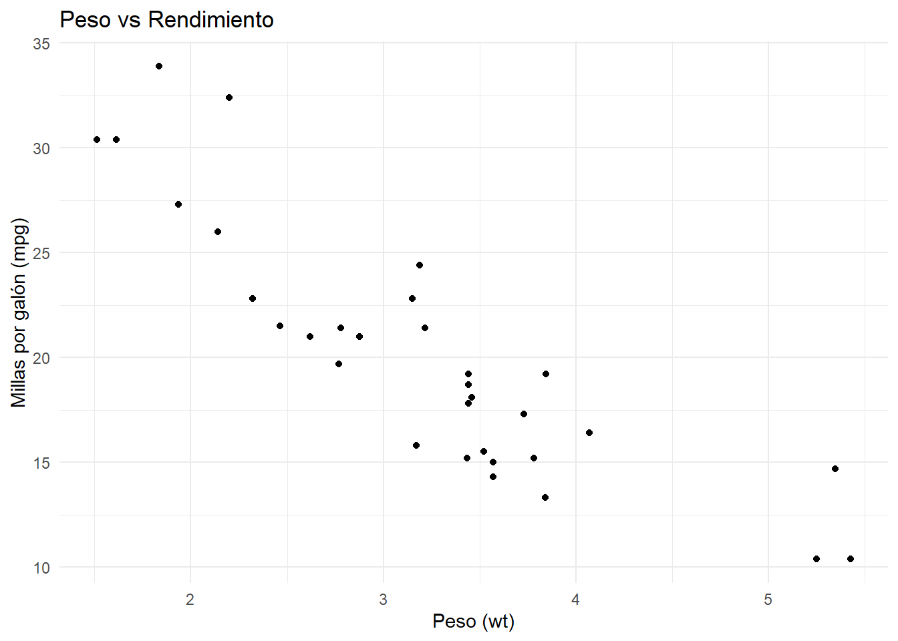
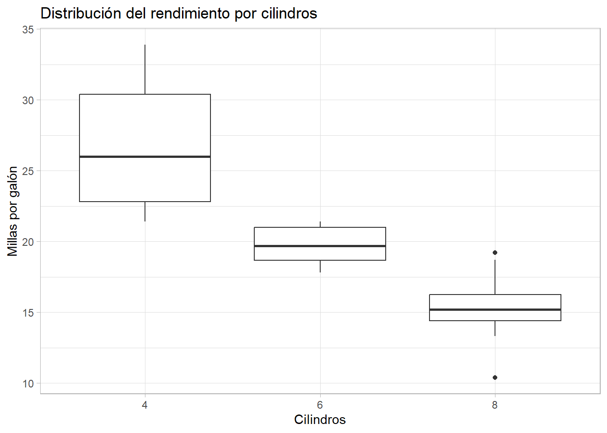
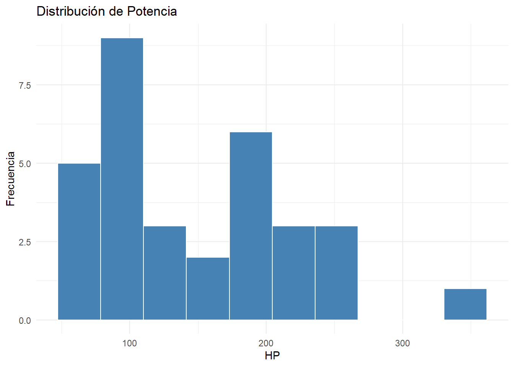
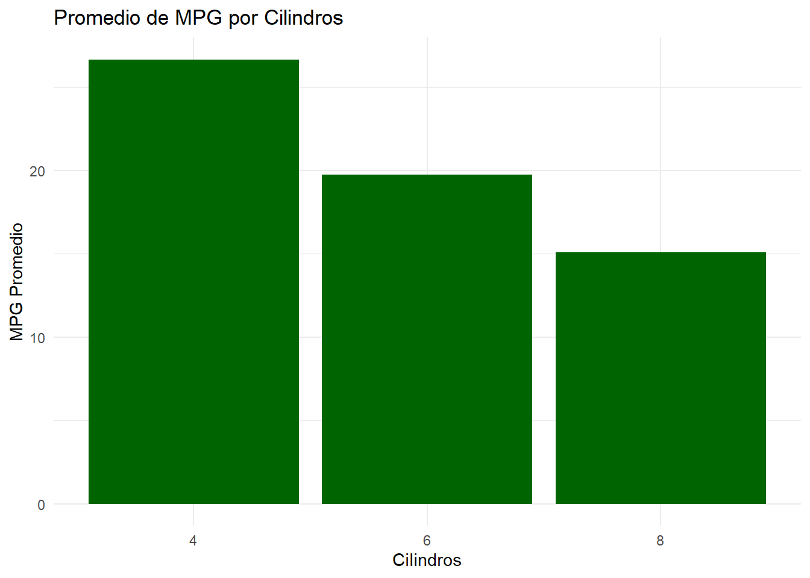
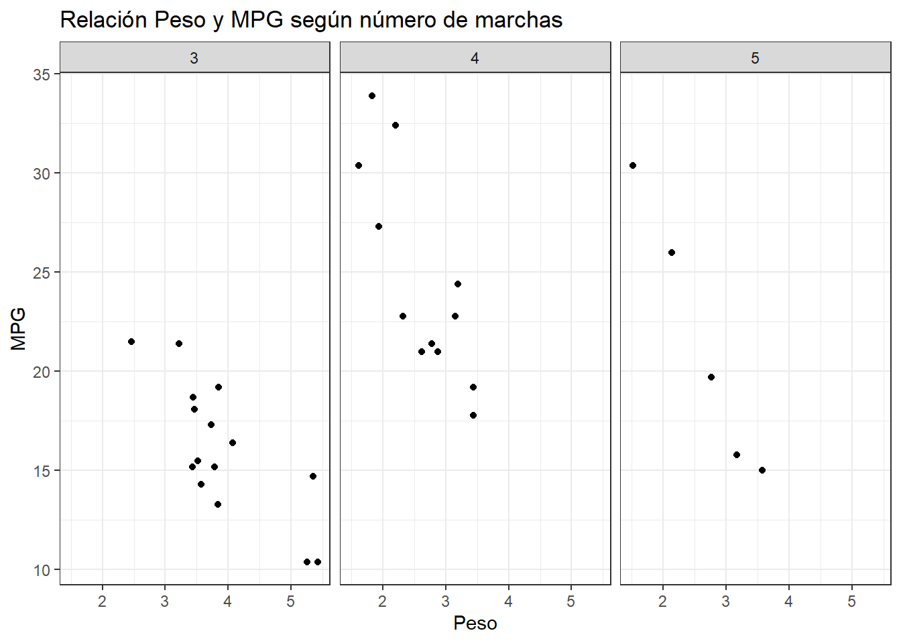
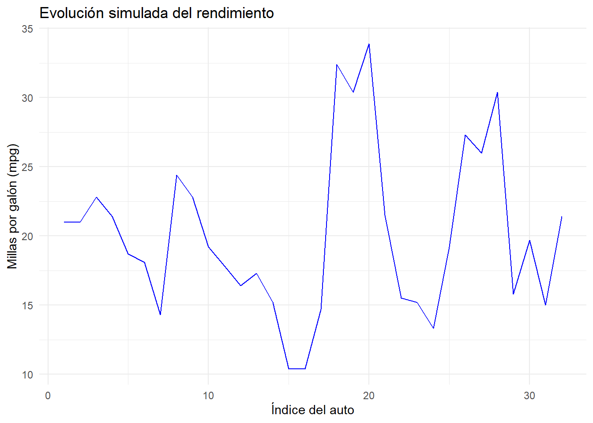

library(dplyr)
Attaching package: 'dplyr'The following objects are masked from 'package:stats':
filter, lagThe following objects are masked from 'package:base':
intersect, setdiff, setequal, unionlibrary(ggplot2)
data <- mtcars
En esta clase vamos a consolidar los conocimientos adquiridos con dplyr y comenzar a trabajar con el paquete ggplot2 para realizar visualizaciones. Usaremos la base de datos mtcars, que está disponible por defecto en R. Comenzaremos construyendo tablas sumarias relevantes que permitan extraer información clave.
Asegurate de cargar los paquetes necesarios:
library(dplyr)
Attaching package: 'dplyr'The following objects are masked from 'package:stats':
filter, lagThe following objects are masked from 'package:base':
intersect, setdiff, setequal, unionlibrary(ggplot2)
data <- mtcarsA continuación se presentan 5 tablas que resumen distintos aspectos de mtcars.
mpg) por número de cilindrosdata %>% group_by(cyl) %>% summarise(promedio_mpg = mean(mpg)) %>% ungroup()# A tibble: 3 × 2
cyl promedio_mpg
<dbl> <dbl>
1 4 26.7
2 6 19.7
3 8 15.1gear) y tipo de transmisión (am)data %>% count(gear, am) gear am n
1 3 0 15
2 4 0 4
3 4 1 8
4 5 1 5hp) por cilindrosdata %>% group_by(cyl) %>% summarise( promedio_hp = mean(hp), max_hp = max(hp), min_hp = min(hp), sd_hp = sd(hp) ) %>% ungroup()# A tibble: 3 × 5
cyl promedio_hp max_hp min_hp sd_hp
<dbl> <dbl> <dbl> <dbl> <dbl>
1 4 82.6 113 52 20.9
2 6 122. 175 105 24.3
3 8 209. 335 150 51.0wt) y cilindrada (disp) por grupo de cilindrosdata %>% group_by(cyl) %>% summarise(peso_disp = mean(wt / disp)) %>% ungroup()# A tibble: 3 × 2
cyl peso_disp
<dbl> <dbl>
1 4 0.0220
2 6 0.0175
3 8 0.0115mpg), mostrando los 5 primerosdata %>% arrange(desc(mpg)) %>% select(mpg, cyl, hp, wt) %>% head(5) mpg cyl hp wt
Toyota Corolla 33.9 4 65 1.835
Fiat 128 32.4 4 66 2.200
Honda Civic 30.4 4 52 1.615
Lotus Europa 30.4 4 113 1.513
Fiat X1-9 27.3 4 66 1.935A continuación, comenzaremos a crear gráficos para visualizar estas relaciones.
ggplot2El paquete ggplot2 nos permite crear visualizaciones complejas de forma estructurada y coherente. Se basa en la gramática de los gráficos: cada gráfico se construye en capas, comenzando por los datos y los ejes, luego se agregan geometrías (barras, puntos, líneas, etc.), escalas, etiquetas y temas.
La estructura básica de un gráfico en ggplot2 es:
ggplot(data, aes(x = variable_x, y = variable_y)) + geom_tipo()
Donde:
data es el dataset.
aes() define el mapeo estético (ejes, colores, tamaños).
geom_tipo() especifica el tipo de gráfico (por ejemplo, geom_point() para dispersión, geom_bar() para barras, etc).
ggplot2ggplot(data, aes(x = wt, y = mpg)) + geom_point() + labs(title = "Peso vs Rendimiento", x = "Peso (wt)", y = "Millas por galón (mpg)") + theme_minimal()
ggplot(data, aes(x = factor(cyl), y = mpg)) + geom_boxplot() + labs(title = "Distribución del rendimiento por cilindros", x = "Cilindros", y = "Millas por galón") + theme_light()
hp)ggplot(data, aes(x = hp)) + geom_histogram(bins = 10, fill = "steelblue", color = "white") + labs(title = "Distribución de Potencia", x = "HP", y = "Frecuencia") + theme_minimal()
data %>% group_by(cyl) %>% summarise(prom_mpg = mean(mpg)) %>% ungroup() %>% ggplot(aes(x = factor(cyl), y = prom_mpg)) + geom_col(fill = "darkgreen") + labs(title = "Promedio de MPG por Cilindros", x = "Cilindros", y = "MPG Promedio") + theme_minimal()
ggplot(data, aes(x = wt, y = mpg)) + geom_point() + facet_wrap(~ gear) + labs(title = "Relación Peso y MPG según número de marchas", x = "Peso", y = "MPG") + theme_bw()
Aunque el dataset mtcars no contiene una variable temporal, podemos simular un gráfico de líneas usando el índice de fila como un pseudo-tiempo para ver cómo varía mpg.
data %>% mutate(id = row_number()) %>% ggplot(aes(x = id, y = mpg)) + geom_line(color = "blue") + labs(title = "Evolución simulada del rendimiento", x = "Índice del auto", y = "Millas por galón (mpg)") + theme_minimal()
En R, es posible automatizar tareas y tomar decisiones mediante estructuras de control. Las principales son:
if / elsePermite evaluar condiciones lógicas.
x <- 5
if (x > 0) {
print("x es positivo")
} else {
print("x no es positivo")
}[1] "x es positivo"forItera sobre elementos de un vector o secuencia.
for (i in 1:5) {
print(paste("Iteración número", i))
}[1] "Iteración número 1"
[1] "Iteración número 2"
[1] "Iteración número 3"
[1] "Iteración número 4"
[1] "Iteración número 5"whileRepite una acción mientras se cumpla una condición.
contador <- 1
while (contador <= 3) {
print(contador)
contador <- contador + 1
}[1] 1
[1] 2
[1] 3repeatEjecuta indefinidamente hasta alcanzar una instrucción de corte (break).
i <- 1
repeat {
print(i)
i <- i + 1
if (i > 3) break
}[1] 1
[1] 2
[1] 3Estas estructuras permiten realizar scripts más dinámicos, automatizar tareas y procesar datos de forma más eficiente.